28 Bear left across both bridges on Brabantse Turfmarkt
Zig-zag left, over the canal, right over the canal, then left with the water on your left.
Starting at the centre of Rotterdam and cycling North, this route gives a fast exit from the city via a tree-covered path and the road around Rotterdam airport. The route continues North on a minor road among attractive fields in a dead straight line, East of the motorway and railway to Delft. This version of the route turns left into Delft past Ikea, but you can also continue a little further North and get lost in the trees surrounding the lake at Delftse Hout, just North-East of the town centre. Distance: around 20 Km.
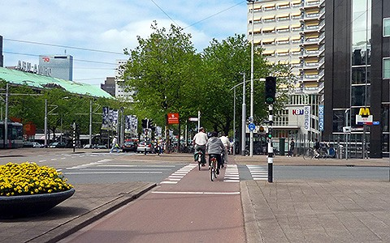
01 North on Coolsingel
Starting on the West side of Churchillplein, head North towards Hofplein.
Continue 700 m on Coolsingel.
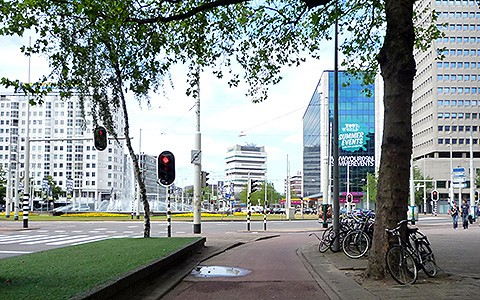
02 Continue over Hofplein roundabout
Continue 300 m on Schiekade past the Shell garage and underneath the railway bridge.
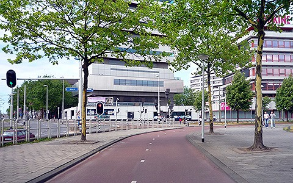
03 Bear left along Schiekade
Continue 700 m on Schiekade - the main road.
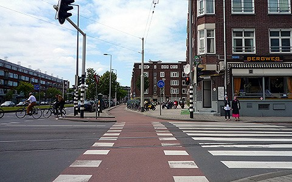
04 Continue on Schieweg
Straight ahead past Cafe Bergweg.
Continue 900 m on Schieweg.
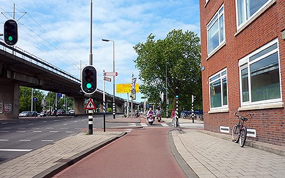
05 Continue across Gordelweg
Follow sign towards Schiebroek over the canal, and straight over the roundabout over the motorway.
Continue % m on %.
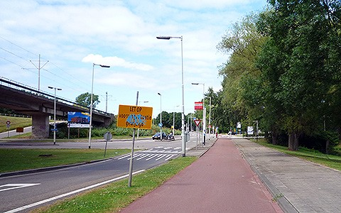
06 Left on Dwarskleiweg
Go underneath the tram and road bridges.
Continue % m on %.
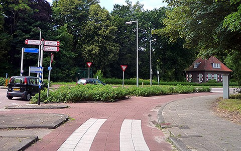
07 Right on Overschiese Kleiweg
Continue % m on %.
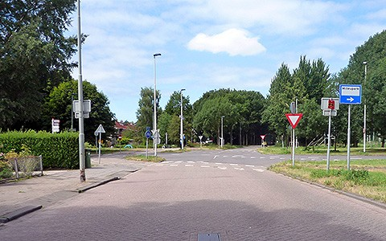
08 Join left-hand cycle path (4 Km)
Continue in the same direction, across the main road.
Continue % m on %.
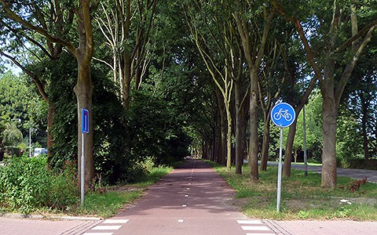
09 Continue on cycle path (Bovendijk)
Now you have really left the city. Follow the cycle path as it bends right then left around the airport.
Continue % m on %.
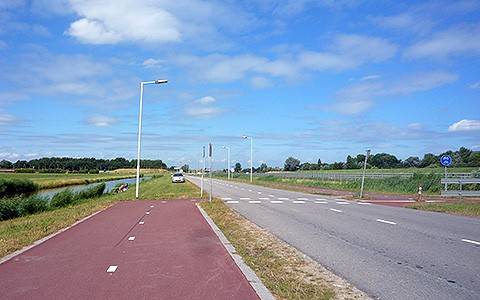
10 Continue on right-hand cycle path (Bovendijk)
The cycle path switches to the other side of the road.
Continue % m on %.
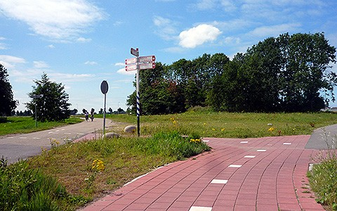
11 Bear left on Landschieding
Follow the sign to Delft (11 Km), continuing around the edge of the airport.
Continue % m on %.
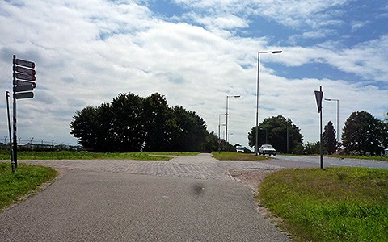
12 Cross right on Oude Bovendijk (7 Km)
Cross the main road carefully; motorists systematically violate the 50 Km/hour speed limit here.
Continue % m on %.
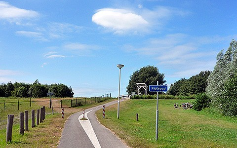
13 Continue over drawbridge
Continue straight-ahead, passing a windmill on the right.
Continue % m on %.
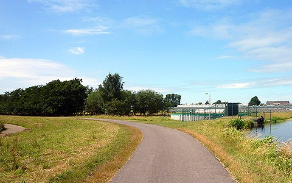
14 Continue past green houses on Ackersdijkseweg
Follow the path, as it bends left then right around the green houses.
Continue % m on %.
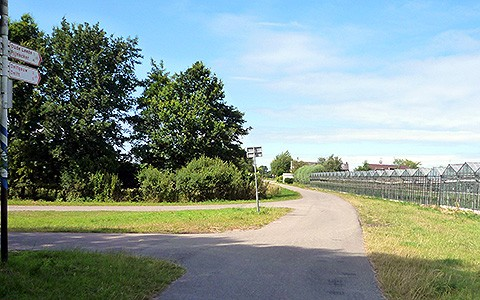
15 Continue on Ackersdijkseweg and Zuideindseweg
Follow the sign to Delft (5 Km)
Continue % m on %.
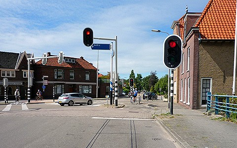
16 Continue on Nordeindseweg
Straight-ahead, crossing the main road.
Continue % m on %.
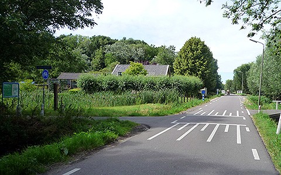
17 Left on cycle path Vrederustpad
Follow the path past a small lake.
Continue % m on %.
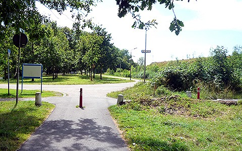
18 Right on cycle path Heempad
Continue % m on %.
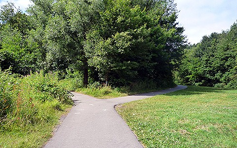
19 Bear right along Heempad
The more direct left fork rejoins the path after 150 m, but has poor tarmac (as of summer 2009) and climbs a slope.
Continue past the back of Ikea.
Continue % m on %.
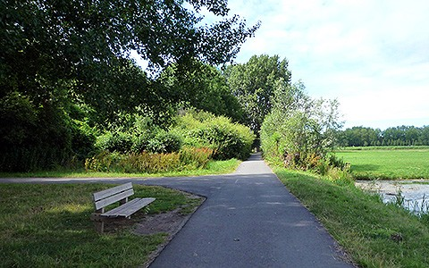
20 Left on cycle path Linnaeuspad
Continue % m on %.
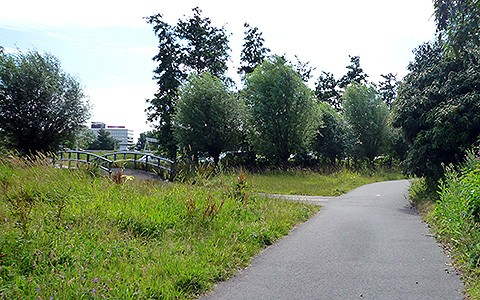
21 Left over bridge on Inbuspad
Continue % m on %.
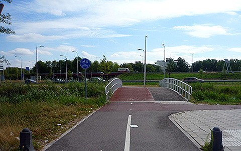
22 Cross bridge, left then right on Oostpoortweg
Cross the bridge, turn left and then right, and head for the road under the motorway, with Ikea behind you.
Continue % m on %.
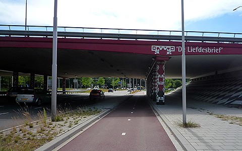
23 Continue on Oostpoortweg
Follow the cycle path into the trees.
Continue % m on %.
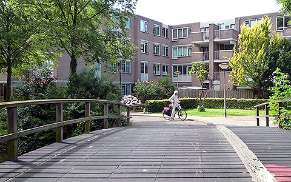
24 Continue on cycle path Weidepad
Cross the wooden bridge and follow the cycle path as it bends left, then right, with water on the left.
Continue % m on %.
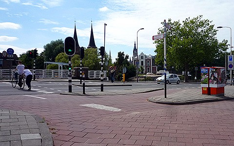
25 Cross left then loop right on Oostpoort
Cross the road and turn left then right over the first bridge, then right again towards to the small drawbridge.
Continue % m on %.
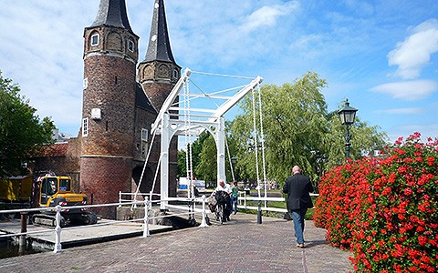
26 Cross drawbridge and pass through Oostpoort gate house
Watch out for tourists posing for photos in front of the narrow archway.
Continue % m on %.
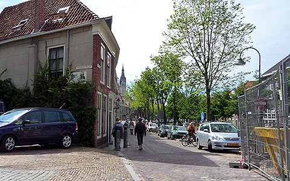
27 Continue on Oosteinde then left on canal Gasthuislaan
Continue straight ahead along the canal Oosteinde.
After 100 m, turn left on canal Gasthuislaan.
Continue 400 m on Gasthuislaan.
28 Bear left across both bridges on Brabantse Turfmarkt
Zig-zag left, over the canal, right over the canal, then left with the water on your left.
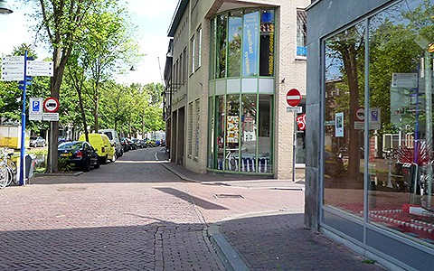
29 Immediate right on Breestraat
Follow the white sign to the station.
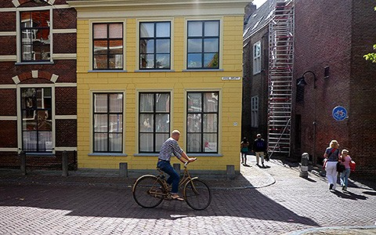
30 Continue on (narrow) Barbarasteeg
Go straight-ahead, slighty to the right, allong the narrow street.
Watch out for pedestrians on the cycle path, as the pavement is too narrow.
Continue % m on %.
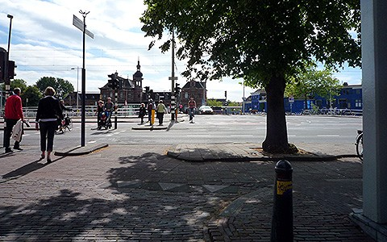
31 Cross to the right onto Stationsplein
Turn right to the traffic lights where the cycle path crosses the main road towards the station.
Continue % m on %.
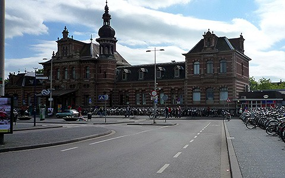
32 Arrive at Delft train station